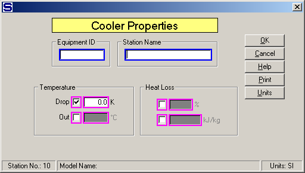

Equipment ID An equipment ID of up to 11 characters can be used to identify the station with an actual station in the process. Any combination of numbers and letters that are used in the factory/refinery to identify equipment can be entered. For example, Equipment ID = 123.456A. It is not necessary to make an entry in the Equipment ID field if the station in the model does not have a corresponding station in the factory/refinery.
Station Name A name of up to 20 characters must be entered for the station. For example, Station Name = Pipe heat loss.
Enter the Temperature Drop, Temperature Out, Heat Loss in percent (%), or Heat Loss in enthalpy (KJ/kg, or BTU/lb) to allow for a heat loss in the flow stream. The Heat Loss is a percentage loss of the total heat in the input flow, or the actual loss of enthalpy; however, the Temperature Drop is a simple loss of temperature due to cooling. Select one of the three input parameters by clicking in the small check box next to the entry field for the parameter. Magenta colored borders on the entry fields are used to indicate that only one of the entries can be selected; that is, when one is selected the others are not accessible.
Temperature
Drop Enter a Temperature Drop for flow going through the cooler. The drop in temperature may cause condensation in a vapor flow stream, but it will not give any sucrose crystal growth if the flow stream contains sucrose - instead, the flow will become supersaturated. For example, Temperature Drop (C) = 3.0
Out Enter the Temperature Out for the flow leaving the cooler. The Temperature Out should be cooler than the temperature of the flow into the cooler and it may cause condensation in a vapor flow stream, but it will not give any sucrose crystal growth if the flow stream contains sucrose - instead, the flow will become supersaturated. For example, Temperature Out (C) = 39.0
Heat Loss
(%) Enter a heat loss in percent (%) for flow going through the cooler. Heat Loss may cause a drop in temperature and condensation may occur in a vapor flow stream; however, sucrose crystal growth will not occur. For example, Heat Loss (%) = 5.0.
(kJ/kg or BTU/lb) Enter a Heat Loss as kJ/kg, or BTU/lb, of flow through the heater. For example,
Heat content of flow into cooler = 200 kJ/kg
Heat loss in cooler = 10 kJ/kg
Heat content of flow out of cooler = 190 kJ/kg
Entry for Heat Loss is: 10 kJ/kg